| 日付 | 2019年1月2日（水） |
|---|---|
| メンバー | 家族（長女・7歳、長男・5歳、両親、姉一家） |
| アクセス | 車 |
今年の初詣はどこに行こうか、行先選択を任されて、直前にネットでサーチする。
東大寺近辺は混雑するし、母親は足が悪いので
あまり坂のある社寺は避けなければならない。
いろいろ調べていると、海龍王寺という寺が見つかる。
あまり聞いたことのない寺だが、それなりに古い寺のようだ。
駐車場は10台と書かれていて不安だったが、余裕で停められた。
早速門を潜って中に入る。
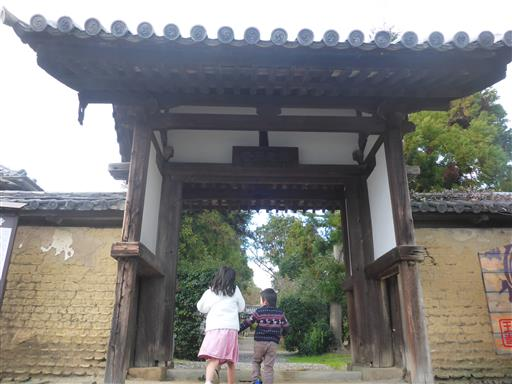
内側にもう1つ門がある。ここからは有料だ。
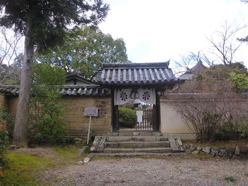
本堂。1666年に再建されたもので、比較的新しい。
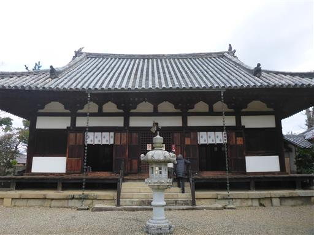
こちらが西金堂。
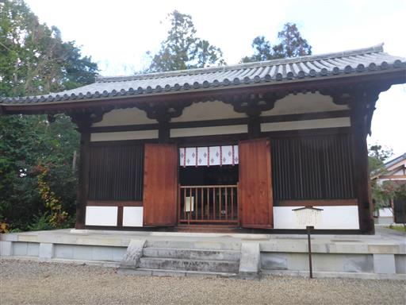
西金堂の中には五重塔がある。建物の中に五重塔があるのは珍しい。
天平時代に造られた五重塔はこの一基しか残っていないようで、
非常に貴重なことから国宝に指定されている。
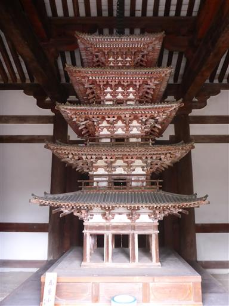
境内には不思議な形の二本の松の木が植えられている。
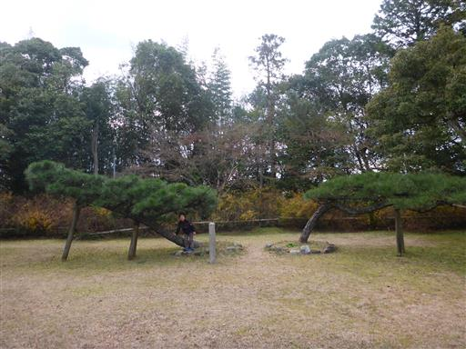
どうやら龍の形になっているようだ。こちらがしっぽ、向こう側が頭だ。

海龍王寺の見学が早くに終わり、すぐそばに法華寺があるため、
そちらにも行ってみることにする。こちらの駐車場もガラガラだ。
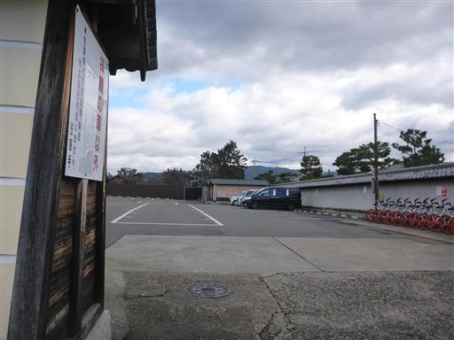
両親が途中で道に迷ったため待っている間、側の公園で遊ぶ。
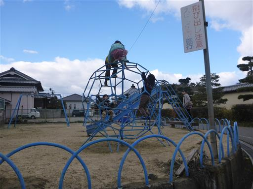
両親は渋滞にはまったようでなかなか来ないため、先に見学することにする。
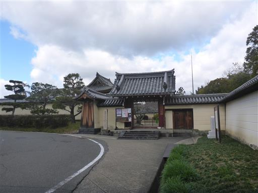
大きな鐘楼。かなり高いところに撞木が見えている。
突いてみたかったが、建物内には入れないようになっている。
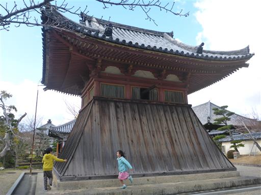
池の中にある護摩堂。こちらの建物は新しそうだ。
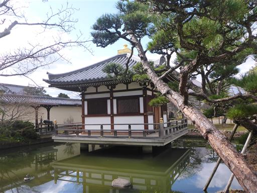
本堂。かなり大きな建物だ。本尊は国宝の十一面観音像。
ネットの情報によると春と秋の一定期間以外は非公開とされている。
公開されているように見えたが、別物だったのだろうか…？
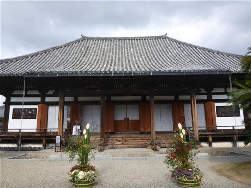
子供達は2つ目の寺で、かなり退屈している。
人が少ないのが救いだ。
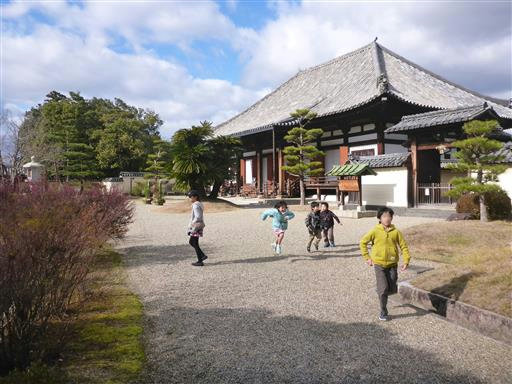
ここから先は別料金のエリア。
正面の建物は浴室。中を見ることはできず、外から見ればただの建物だ。
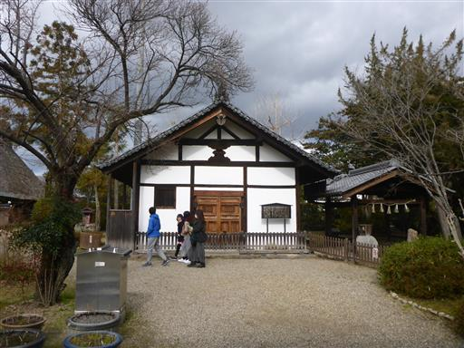
華楽園。そこそこ広い庭園だが時期が時期だけにほとんど花は咲いていない。
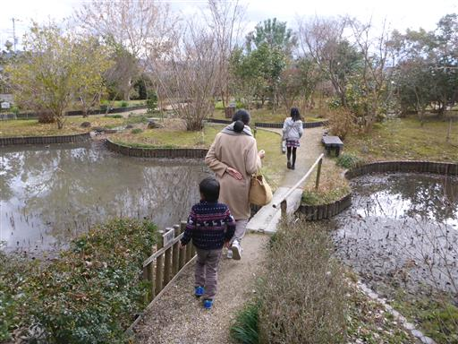
アヤメの花が一輪だけ咲いている。他に椿がチラホラ。
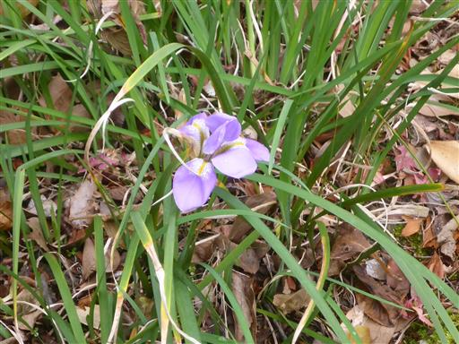
光月亭の縁側で少し休憩する。
他に見るべきものはあまり無く、わざわざ別料金を払ってまで来るほどの場所ではなかった。
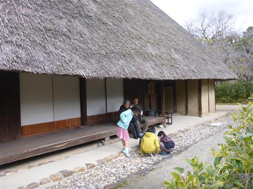
昼食は近くの奈良ロイヤルホテルのレストランでとることにする。
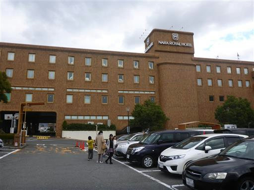
ホテルだけあって門松は立派だ。
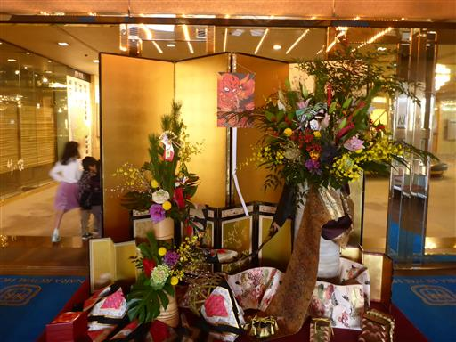
天井は鏡張り。上を見て息子は「コウモリだ」と言っている。発想が面白い。
レストラン万葉で昼食をとって帰宅の途につく。
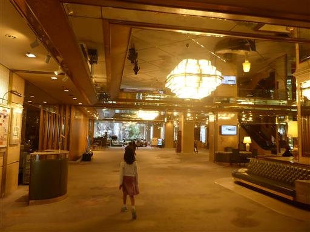